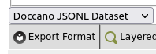

Phrase Tagging with Doccano
Doccano is an open-source data labeling tool intended for machine learning practitioners. It allows you to tag words and phrases in texts with a very easy-to-use drag and select user interface.
You can use Doccano to tag phrases and import your tags into phrase layers in LaBB-CAT. The broad steps of the process are:
- Export a selected set of transcripts from LaBB-CAT to the Doccano JSONL format
- Import the resulting file into Doccano
- Tag the texts as desired
- Export the tagged texts from Doccano to a JSONL file
- Import the tagged JSONL file into LaBB-CAT
LaBB-CAT uses ‘formatter’ modules to import and export files in the formats of different annotation tools.
If you find that ‘Doccano JSONL Dataset’ is not an option for exporting or importing Doccano files, it’s because the Doccano module is not installed on your LaBB-CAT instance.
To install the Doccano formatter:
- Download the format conversion module here:
https://github.com/nzilbb/ag/blob/main/bin/nzilbb.formatter.doccano.jar - In LaBB-CAT, select the converters menu option
- Press Choose File at the bottom, and select the nzilbb.formatter.doccano.jar file you downloaded in 1.
- Press Upload
- Press Install
Doccano JSONL Dataset should now be an option for selection on the transcripts page.
1. Export from LaBB-CAT
- In LaBB-CAT, open the transcripts page.
- Use the filters at the top to narrow the list down to the transcripts you want to export, and/or tick the target transcripts.
- Click Export Format.
A list of layers will appear, with a list of formats below. - If you wish to include any existing phrase/span layers in Doccano, tick the corresponding layers in the list.
NB: Annotations on the layers you select here will be displayed in Doccano but cannot be edited; any changes to these annotations will be ignored when re-importing the dataset into LaBB-CAT. - Below the list of layers, there’s a dropdown list of export formats.
Select Doccano JSONL Dataset.1
 - Click Export Format
- Save the resulting …jsonl file.
2. Import into Doccano
- In Doccano, you will need to create a project to import your texts into. Click Projects on the top right.
- Press Create on the top left.
- Select the Sequence Labelling option.
Sequence Labelling option in Doccano is ticked - Enter a name and description for your project.
- Tick the Allow overlapping entity option.
- Press Create at the bottom.
This will create the project and take you to its Home page. - Press Dataset on the left.
- Move the mouse over the Actions button at the top, and select the Import Dataset option.
- Select JSONL as the File format.
You can leave the other options that appear with their default values. - Find the …jsonl file you exported from LaBB-CAT earlier, and drap/drop it on to the grey area labelled Drop files here…
(Alternatively you can click on the Drop files here… area, and find/select the …jsonl file.)
- Press Import.
Once the import is complete, you will see a list of texts on the Dataset page. The Metadata column will be full of text and numbers - this is normal; LaBB-CAT includes information in the Metadata that it needs to import the text back into LaBB-CAT correctly.
3. Tag the texts
Before adding annotations to the texts, you need to create Labels in Doccano. These are the annotations you’ll be able to add to words/phrases in the texts.
- In Doccano, click Labels on the left-hand menu.
If you exported any additional phrase/span layers from LaBB-CAT, you will see labels for the resulting annotations already listed here.
Each imported label is prefixed with the ID of the LaBB-CAT layer it came from, followed by a colon. This is the pattern you must follow with the labels you create. - Move the mouse over the Actions button at the top and click the Create Label option.
- Enter the label. This should be using the format:
{LaBB-CAT-Layer-ID}:{LaBB-CAT-Label}
e.g if you intend for your new annotations to be added to a LaBB-CAT layer called “narrative-action” and one of the possible labels in LaBB-CAT will be “complicating action”, then the Label you create in Doccano should be:narrative-action:complicating action
- Pick a colour for the label if you wish.
- Assuming you want to add more than one label, click Save and add another.
- Repeat the above steps for each label you would like to annotate with.
- Once you’ve finished, click the Labels option on the left-hand menu.
You should see the label’s you’ve added, listed after the imported ones.
Annotating Texts
Now that you’ve configured the labels you’re going to use, you can annotate the texts you imported:
In Doccano click Start Annotation at the top left.
(Alternatively, you can click Dataset and then press the Annotate button on a text of your choice)
You will see one of the texts you imported.
The participant ID of the speaker appears at the beginning of each speaker turn, and if you exported phrase/span annotations from LaBB-CAT, they will appear tagging the corresponding regions of the text.
To tag a phrase in the text, simply click and drag over the phrase to select it. A menu of tags will appear.
When you click the desired tag, it will be added to the text.
Preselect Label for Tagging
Doccano includes a mode for tagging in which you can pre-select the Label you want to use, and then the selected Label is automatically used whenever you click/drag a phrase. This mode may be quicker as it involves fewer clicks overall.
To use this method of tagging, scroll to the top of the text, and click the desired Label in the list on the top right.
Now, whenever you click/drag a phrase in the tex, it will immediately be tagged with the selected Label.
Changes are automatically saved. Once you’ve added all the tags you want in this text, you can move to the next by using the navigation buttons at the top right of the text.

4. Export from Doccano
One you’ve finished annotating all texts, you need to export them with the new tags so they can be imported into LaBB-CAT.
- In Doccano, click the Dataset option on the left-hand menu.
- Move the mouse over Actions at the top and select Export Dataset.
- Select JSONL as the File format
- Press Export.
- Save the resulting …zip file.
- Extract the …jsonl file that is contained in the …zip file you just saved.
5. Import into LaBB-CAT
Ensure phrase/span layers exist in LaBB-CAT
When you import the …jsonl file into LaBB-CAT, it will extract the new Labels you’ve added, and assume that each Label is in the format:
{LaBB-CAT-Layer-ID}:{LaBB-CAT-Label}
Each label will be split on the colon, and the left part will be assumed to be a layer ID, and the right part will be assumed to be the label for annotations on that layer.
If you have added layer ID prefixes for layers that don’t exist yet in LaBB-CAT, you have to create the LaBB-CAT layers before importing the …jsonl file, so that the new annotations have somewhere to go.
If the new annotations always tag phrases within the same speaker turn (i.e. never cross turn boundaries), then you can add a phrase layer. Otherwise, you must add a span layer.
- In LaBB-CAT, select phrase layers or span layers from the menu as appropriate.
- At the top of the list of layers, fill in the details of the blank row for the layer to add:
- Layer ID: the Doccanno Label’s prefix (i.e. the part before the colon)
- Type: Text
- Alignment: Intervals
- Manager: no manager should be selected
- Generate: Never
- Project: select a project if desired, or none if not
- Description: An informative description of the layer, perhaps including a lilst of all labels included.
- Click New to add the layer
If you have included Labels corresponding to multiple LaBB-CAT layers, ensure all the layers have been created in LaBB-CAT before continuing with the import.
Import Dataset
- In LaBB-CAT, select the upload menu option at the top and then the upload transcripts option.
- Press the first Choose File button on the left.
- Select the …json file you extracted from the …zip file above.
- Tick the Update Existing checkbox.
- Press Upload.
You will see a list of all the new Label prefixes, with a dropdown box for each for selecting the LaBB-CAT layer that the annotations should be imported into.
- Ensure all Label prefixes are matched to the correct LaBB-CAT layer
- Pres Next
Your new annotations will be merged into the existing transcript in LaBB-CAT.
You can double check this by opening on of the transcripts you tagged in LaBB-CAT and ticking the layer(s) of the new annotations. You annotations will appear, lined up with the phrases as you specified in Doccano.
Footnotes
If Doccano JSONL Dataset is not an option, then you need to install the Doccano JSONL Dataset formatter - see instructions on Installation of the Doccano Formatter↩︎